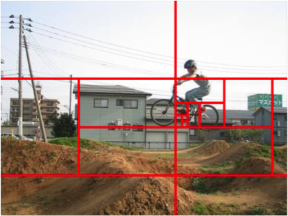
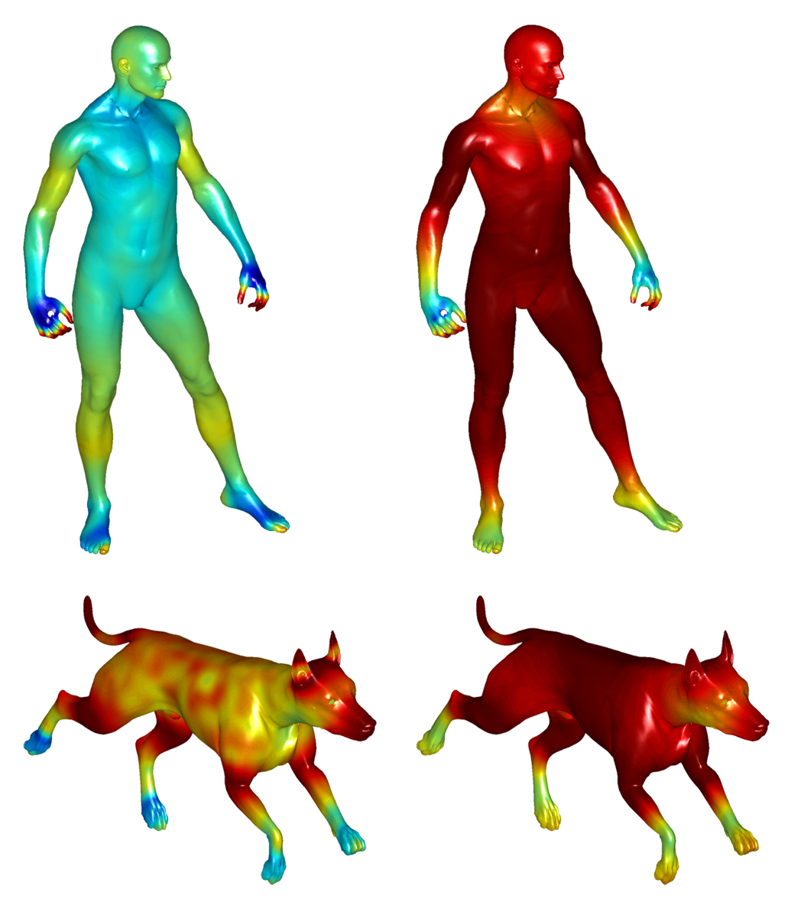
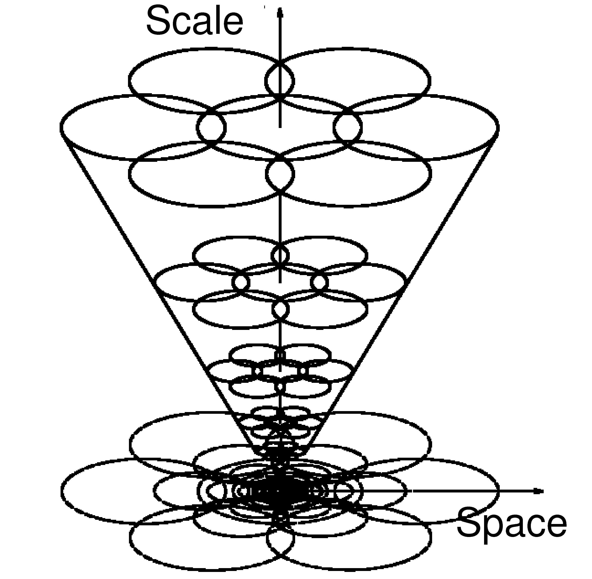
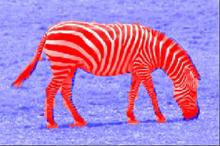
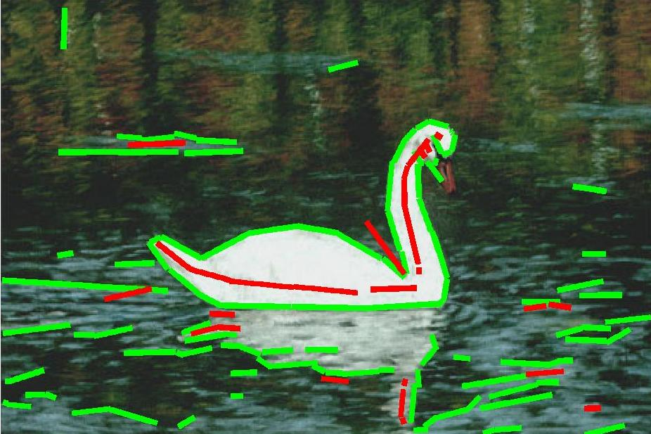

UberNet
A first release of the CVPR 2017 multi-task network is available
here
DenseReg: Deep, Dense Face Registration
A first release of our CVPR 2017 dense face registration model is available
here
Deep Boundary detector
A first release of the ICLR 2016 boundary detector is available
here
Deep Convolutional Descriptors
Our ICCV 2015 convolutional descriptors are available
here
Deeplab
Our ICLR 2015 semantic segmentation system is available
here

Efficient object detection with deformable part models
The code for rapid bound computation in DPM detection from our PnA-ECCV12 paper is now online
This further accelerates the earlier implementation of our NIPS'11 paper on Branch & Bound for detection with DPMs.
Fractional Programming Grouping
A first release of the CVPR 2010 fractional programming grouping algorithm is available
here

Intrinsic Shape Context Descriptors - Scale Invariant HKS
[NEW!] The code for our CVPR 2012 and 2010 papers on surface descriptors is now online

Learning-based symmetry detection
[NEW!]The implementation and the ground truth annotations for our ECCV'12 paper on learning-based symmetry detection is available from here
Dense Scale-Invariant Descriptors
The front-end for our CVPR '08 paper on scale-invariant descriptors - extended to perform dense, scale-invariant feature extractionCode, readme, documentation: sid.zip.

Modulation Features for Texture Analysis
The front-end for our PAMI paper on texture segmentation.Code includes:
Multi-scale Quadrature Filter Pairs (Gabor and Edge filters)
Energy Separation Algorithm and Regularized ESA
Edge vs. Texture discrimination
More

Scale-Invariant Edges and Ridges
My implementation of T. Lindeberg's Primal Sketch.Code includes:
Scale-space edge and ridge detection
Efficient IIR implementations of Gaussian filtering
Contour extraction and segmentation
More